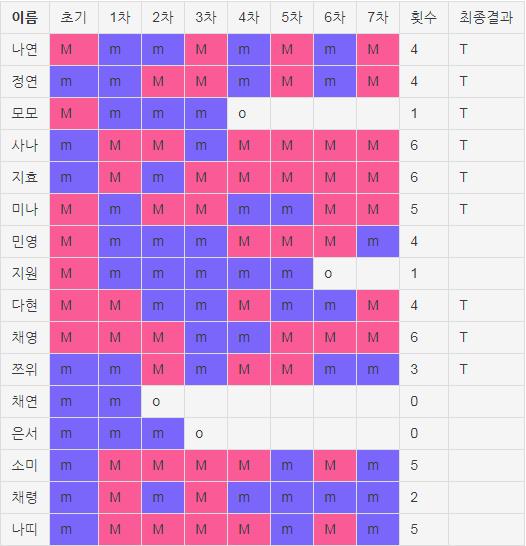

|  | [메이저]/[마이너] 승강표M : [메이저] m : [마이너] O : [탈락] T : [TWICE 선정] 횟수 :미션별 [메이저] 선정 횟수 ★모모는 4차(5화)에서 투표수 부족으로 탈락 하였지만 JYP팀은 댄스/퍼포먼스 멤버로 이미 모모를 점찍어 둔 상태였기에 JYP 재량으로 7차(마지막화)에서 극적으로 TWICE로 선정된다.★ 원래는 7인조 구성으로 시작하였지만 쯔위와 모모의 댄스/퍼포먼스에 반하여 마지막화에서 9인조로 급 변경됨. 7월 7일 9명의 소녀 TWICE가 정식으로 선정되었다. |